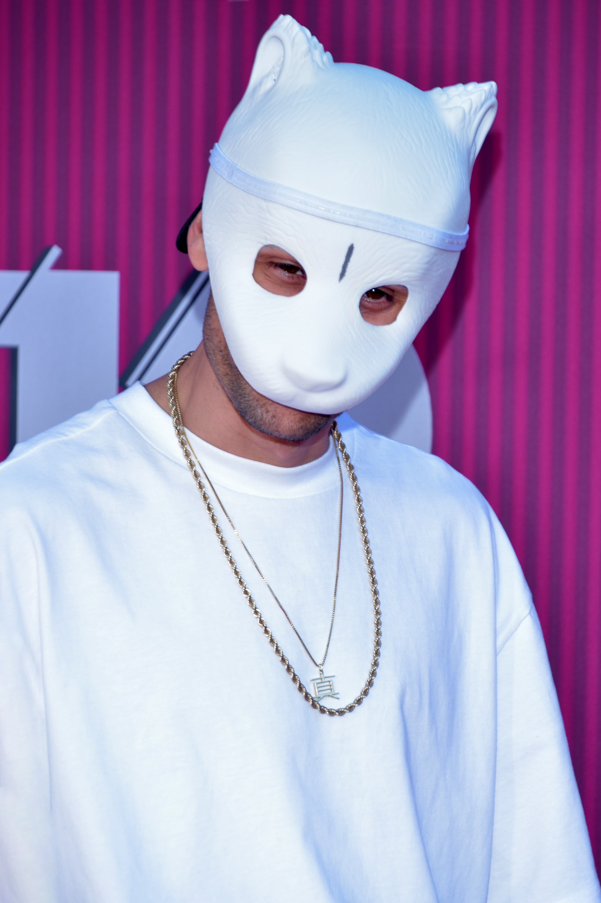

A Propos de CRO

CRO, de son vrais nom Carlo Waibel est née le 31 janvier 1990 à Mutlangen, dans le Lander de Bade-Wurtemberg en Allemagne
Il est un Rappeur et Producteur dans son pays, et est considéré comme le pére du "raop", un mélange de Pop et de RAP.
Il est considéré comme un des plus grand artiste Allemand de l'air moderne. Bien que sa popularité à baissé, il reste un des artiste les plus écouté en Allemagne avec plus de 4 Millions d'Auditeur mensuels sur Spotify
Il à crée une carosserie pour une Mercedes-Benz CLA (En partenaria direct avec la marque)